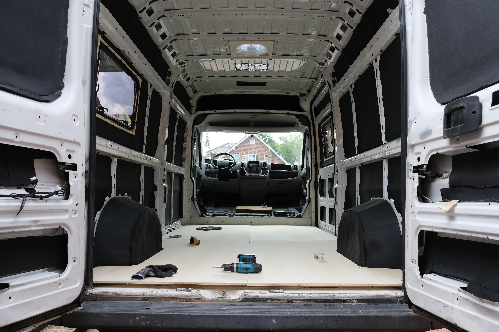

Van Conversion
Blogupdate numero uno!
Nun sind bereits sechs weitere Wochen vergangen und es hat sich so einiges getan. Das noch zuletzt leere Auto wurde mittlerweile mit ein wenig Leben gefüllt. Aber fangen wir mal vorne an.
Nachdem das Auto blitze blank war, konnten wir uns wieder einmal fragen, womit wir jetzt weitermachen. Diese Frage haben wir uns quasi täglich in den letzten Wochen gestellt. Damals entschieden wir uns für die Isolierung der Wände, des Bodens und der Decke, einfach alles was halt so zu sehen war, doch bevor wir dies machen konnten, verteilten wir unsere "Schallminderung" bzw. Alubutyl. Hierbei handelt es sich um eine Art Aluminium, welches man in kleineren Stücken auf den Blechteilen des Fahrzeugs anklebt. Dadurch sollen die üblichen Blechgeräusche des Autos verringert werden. Wir bestätigen diesen Effekt, aber so unglaublich stark, wie so mancher auf Youtube der Meinung ist, finden wir den Effekt jetzt nicht. Als Nächstes begannen wir mit der Isolierung.
Als Isolierung haben wir Armaflex gewählt, einer Art Schaumstoff, welche wir als "selbstklebend" gekauft haben und das klebt so richtig. Angefangen haben wir mit den größten Flächen der Seiten und haben uns von da an einmal durch das gesamte Auto gearbeitet. Neben den schwarzen Platten haben wir auch noch normale Glasfaser Dämmmatten in die Zwischenräume gestopft, wo wir sonst nicht normal isolieren konnten. Bevor wir aber die Decke isolieren konnten, mussten wir noch die nötigen Löcher für zwei Dachhauben und zwei Fenster in die Seitenwände und Decke schneiden. Bis wir dann aber wirklich mal das erste Loch in der Seitenwand bohrten, verging eine menge Zeit, da wir uns einerseits lange unsicher waren, ob die gezeichnete Schablone wirklich passt und andererseits, ob das Fenster dann überhaupt gerade ist. Aufgrund der stärkeren Federung auf der Hinterachse steht das Auto nämlich immer schräg, was ein Arbeiten mit der Wasserwaage natürlich überflüssig macht. Aber am Ende können wir uns freuen und berichten, dass alle Fenster und Dachhauben gerade und wasserdicht verbaut wurden!
Nachdem wir nun Löcher in unser Auto gemacht hatten, konnten wir weiter Isolieren und somit mit dem Boden Anfangen. Für den Boden haben wir erst ein Untergestellt aus Holzlatten gebaut, damit dazwischen die Isolierung eingesetzt und dann auf die Holzlatten unser zukünftiger Boden angebracht werden kann. Somit wurden Latten angeklebt, Isolierung dazwischen gebastelt und ein neuer Boden zugeschnitten. Hierfür haben wir einfach den alten Boden genommen, da dieser aber recht schwer und stellenweise auch schon kaputt war, nutzen wir ihn als Schablone und bauten uns einen neuen Boden. Als wir jenen dann in das Auto eingebaut hatten, sah es alles schon irgendwie anders aus.
Jetzt wo der Boden eingebaut war, haben wir aufs neue unsere Planungen mit Bleistift aufgezeichnet und konnten mal sehen, wie viel Platz wir in etwa haben werden. Zusätzlich haben wir das erste Mal all unsere, vor allem elektrischen, Bauteile an den Ort gelegt, wo sie eingeplant waren. Als Nächstes mussten wir nämlich die ersten Kabelkanäle in den Schächten verstecken, durch die später die Kabel durchlaufen sollen. Wir haben uns bewusst dazu entschieden Kabelkanäle zu benutzen, da wir keine Lust auf ein durchgescheuertes Kabel hinter unserer ganzen Wandverkleidung hatten. Während ich mich um die Elektrik gekümmert habe, hat Marie im Fahrerhaus neuen Teppich zugeschnitten und ausgelegt. Als das erledigt war, dachten wir, wir könnten die Sitze wieder einbauen, da dieser Bereich ja "fertig" wäre. Es sollte sich herausstellen, dass dies ein Fehler war.